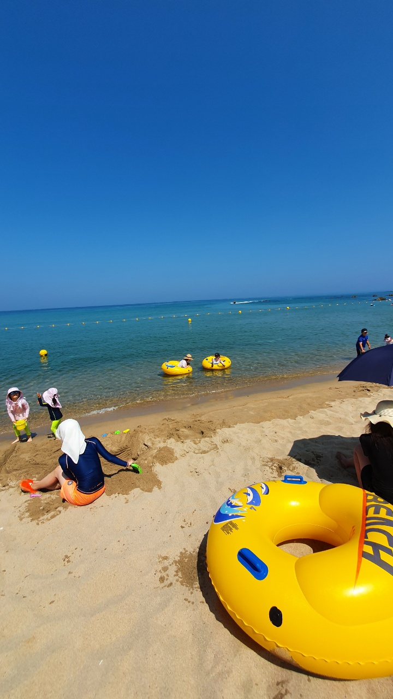
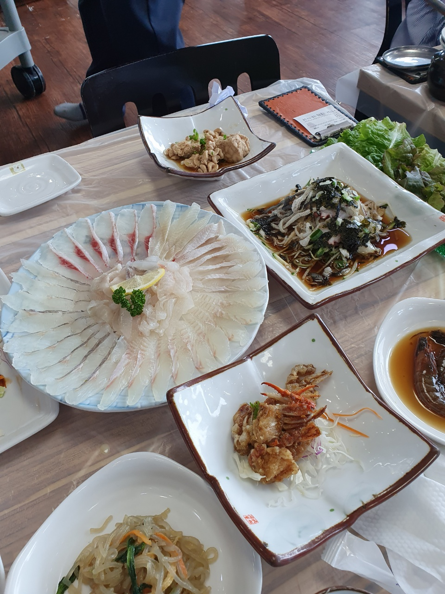
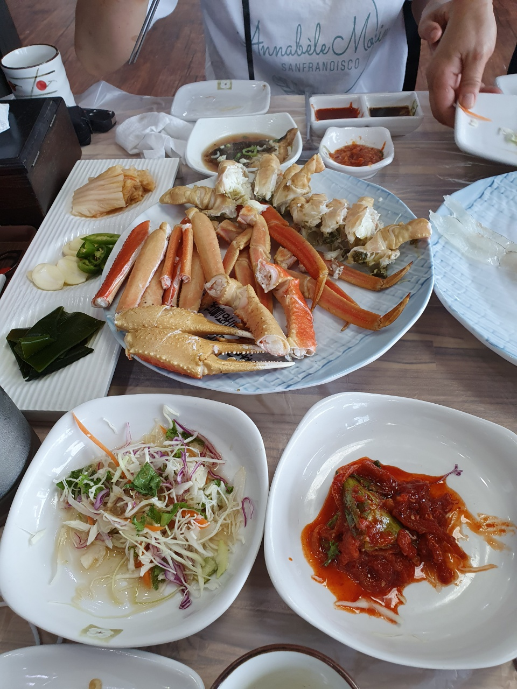
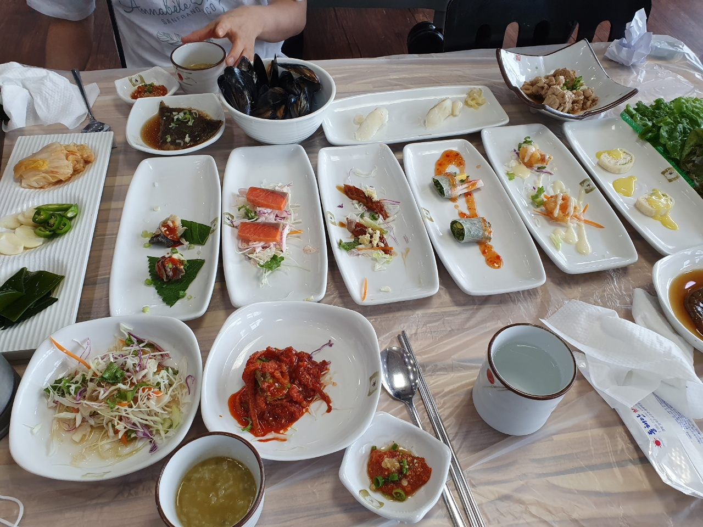
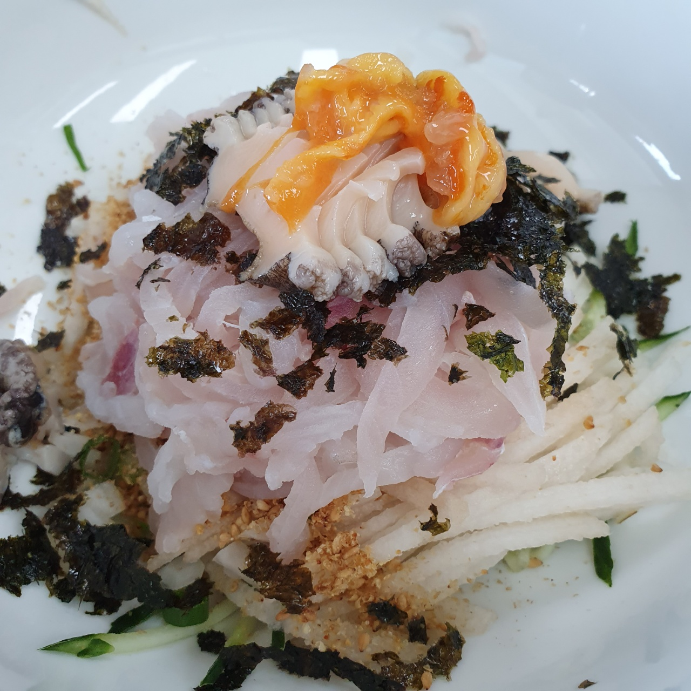
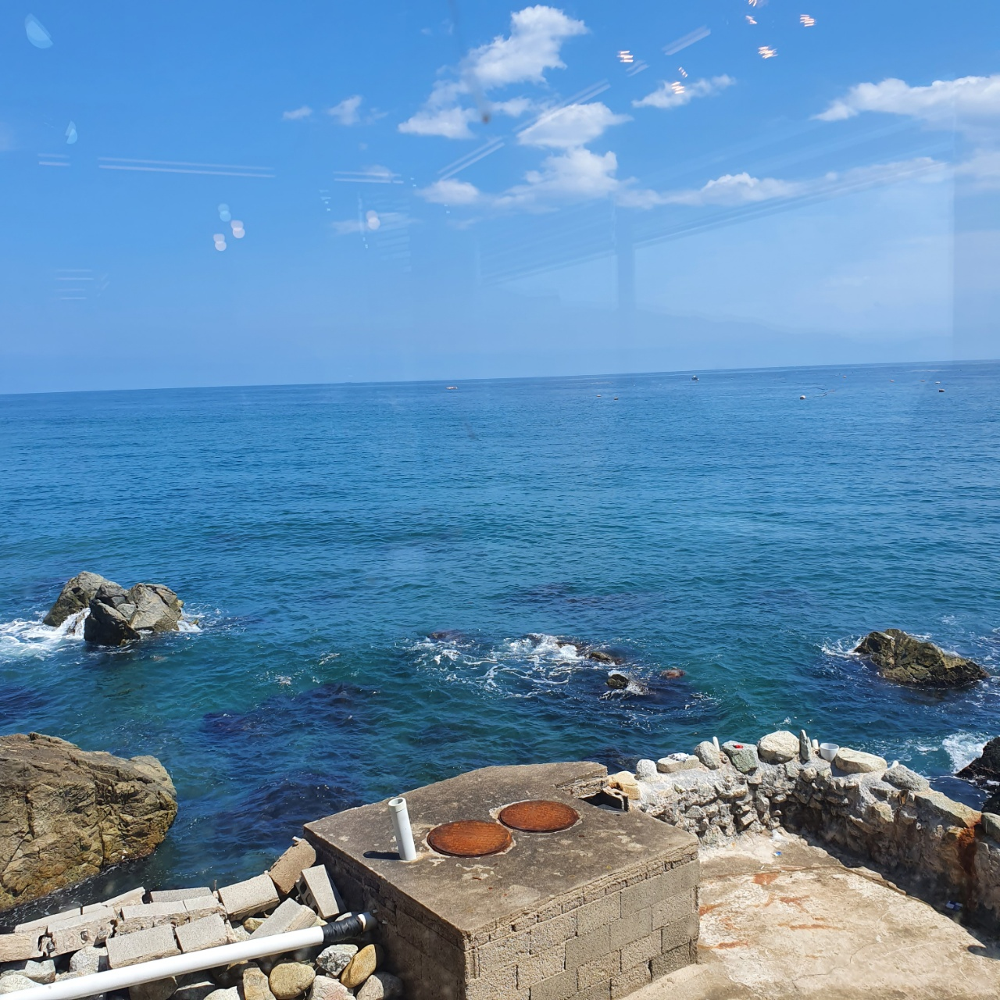
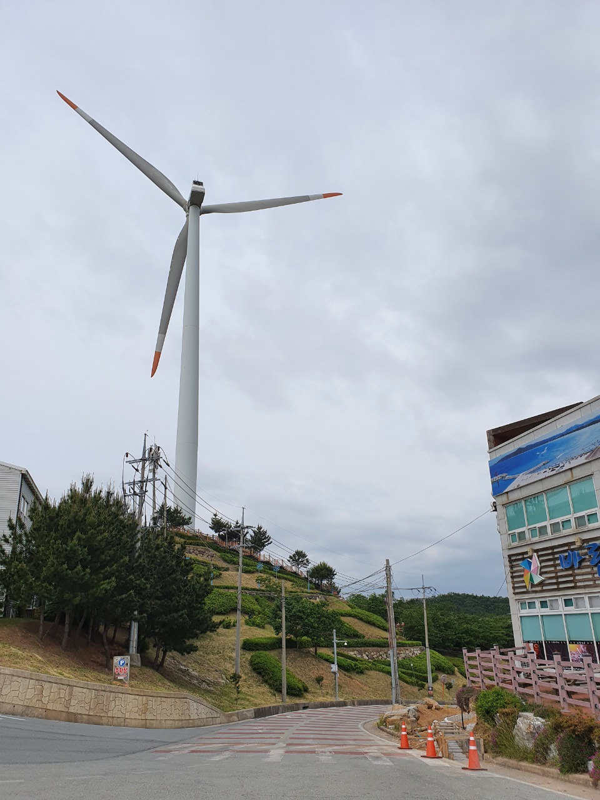
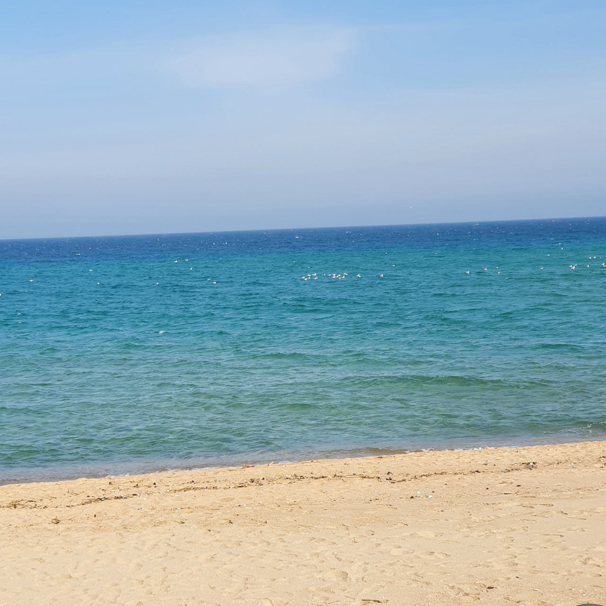
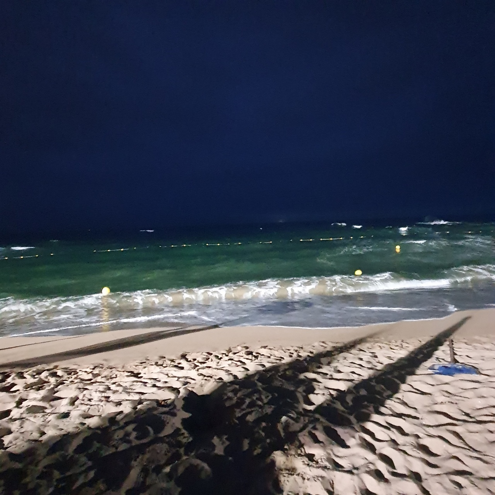

추천 일정
(1일차) 동대구역 --> 이월드 --> 숙소
(2일차) 반월당역 --> 동성로 --> 숙소
(3일차) 숙소 --> 앞산 카페거리 --> 동대구역
1일차
영덕은 대중교통이 별로 좋지 않기 때문에 차를 가지고와야 재미있게 구경할 수 있습니다.
영덕은 해안지역이기에 여름에 오면 물놀이를 즐길 수 있어 좋고, 겨울에는 영덕 특산물인 대게가 제철이라 좋습니다.
장사해수욕장을 가기전 바로 옆에 장사상륙작전 전승기념관에 들러서 6.25전쟁으로 희생되신분들을 기억하는 시간을 가지면 좋을것 같습니다.
장사상육작전 전승기념관 홈페이지
그리고 바로옆에 장사해수욕장에서는 재미있게 물놀이를하고 샤워장에서 샤워까지할 수 있습니다.

장사해수욕장:네이버지도
바닷가 주변인 만큼 해산물이 정말 많기에 강구 대게거리나 블루로드길에 있는 맛있는 회나 대게를 먹을 수 있습니다.

2일차
1일차에 신나게 논만큼 2일차는 블루로드 해안길을 차를타고가면서 아름다운 바다경치를 볼 수 있습니다.
영덕블루로드:네이버지도
또한, 바닷가 주변으로 이쁜 카페도 많기에 카페에 앉아서 바다 구경을 할 수도있고,
블루로드 해안길에 있는 식당에서 바다를 보면서 맛있는 식사를 할 수 있습니다.

블루로드길로 영덕 해맞이 공원에 가서 여러 체험을 해볼 수 있습니다.
또한, 풍력발전기에가 있어 높은 산위에서 시원한 바람을 맞으며 바다 구경을 할 수 있습니다.

영덕해맞이공원
그리고, 해맞이 공원을 지나 계속 가다보면 대천해수욕장과 고래불해수욕장을 갈 수 있습니다.

영덕은 인구가 적은 지역인만큼 조용하지만 정말 맑은 바닷물과 공기를 느낄 수 있고, 아름다운 자연환경을 볼 수 있습니다.